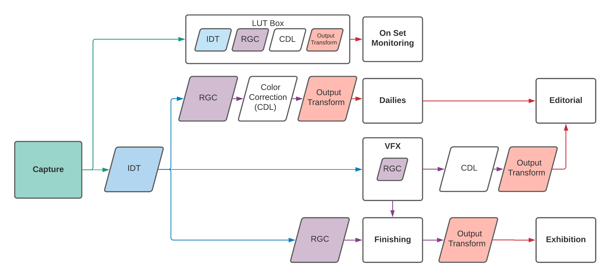
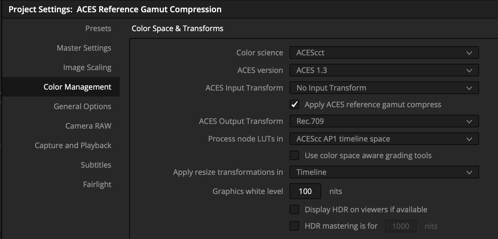
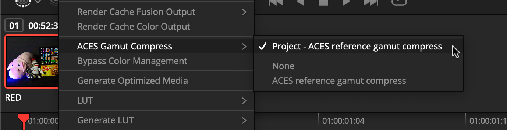
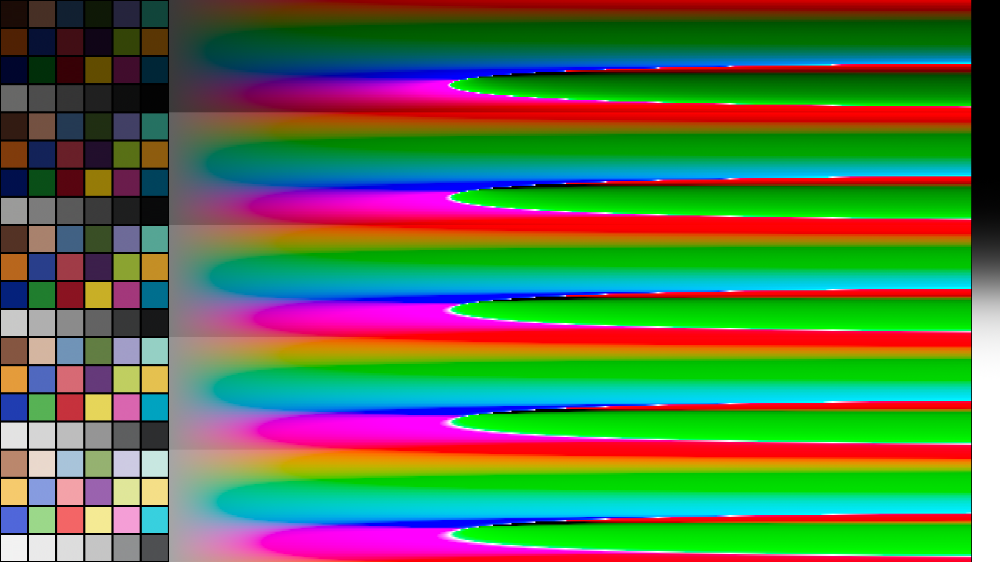
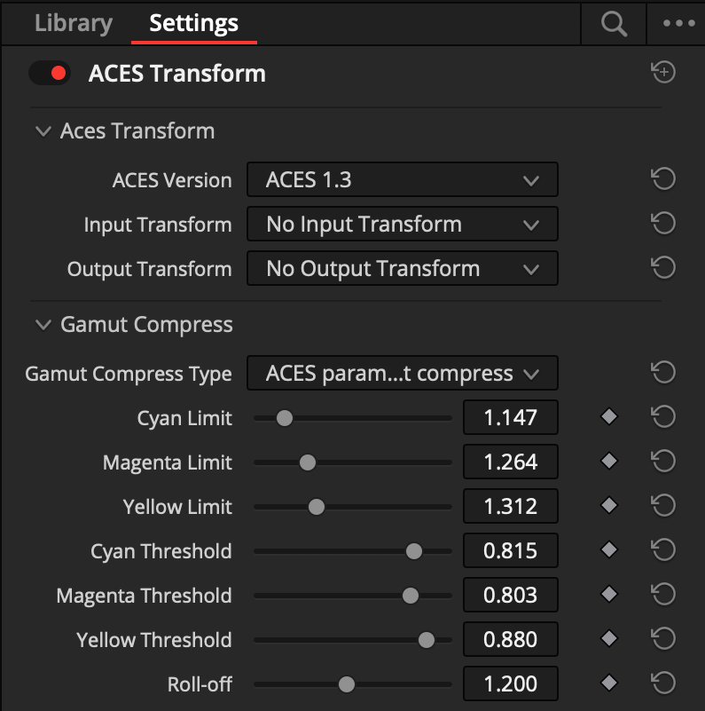

ACES Reference Gamut Compression Implementation Guide¶
Scope¶
The purpose of this document is to detail and define standards for user interface and experience, workflow, tolerances, and tracking of the ACES Reference Gamut Compression (RGC) published in ACES 1.3. For detailed technical specifications, please refer to the ACES Gamut Mapping Architecture VWG - Technical Documentation.
References¶
The following standards, specifications, articles, presentations, and texts are referenced in this text:
Introduction¶
The ACES Reference Gamut Compression was introduced to help solve ACES user issues with out of gamut (negative) pixels introduced either in the conversion from camera raw RGB via an Input Transform (IDT) into ACES AP0 or in the conversion from ACES AP0 into ACES AP1 (ACEScg and ACEScct). These out of gamut pixel values are problematic when their negative components cause issues in compositing, and may also produce visual artifacts when viewed through an ACES Output Transform.

Target Audience¶
This document is targeted at software developers and product managers looking to integrate the Reference Gamut Compression into their software package or library. It will focus on the “how” as opposed to the “why”, which is covered in the architecture documentation above.
Workflow Recommendations¶

As visualized in the flowchart above, it is recommended (in the current absence of AMF for tracking) that most productions utilize the gamut compression in every area - from on set all the way to finishing. This means that at this time, the RGC is “always on” by default in any viewing pipeline. Following the general ACES workflow philosophy, the RGC is only baked into image data at the appropriate stage in the pipeline - which varies based on the needs of the production, as outlined in the flow chart above. For further workflow specifications, please refer to the User Guide.
Reference Implementation Specifications¶
Versioning and Naming¶
The Reference Gamut Compression published in ACES 1.3 uses the following ACES Transform ID and ACES User Name in the CTL:
<ACEStransformID>urn:ampas:aces:transformId:v1.5:LMT.Academy.ReferenceGamutCompress.a1.v1.0</ACEStransformID>
<ACESuserName>ACES 1.3 Look - Reference Gamut Compress</ACESuserName>
Implementers should only make the RGC available in the UI when their application has the ACES version set to 1.3 or higher.
Project and Clip Level Setting¶
When an application has the ACES version set to 1.3 or higher, a simple check-box (defaulting to on) should be exposed in the project settings which applies the RGC to all clips in the project.

An override should be provided at the clip level, so that the user can control the RGC setting for individual clips, if required.

Implementers may also choose to offer a parametric variation of the RGC (see Section 9).
Export Settings¶
The user should be able to easily control whether rendered media will have the RGC “baked in”. Options should be available so that exports can either follow the global project setting, individual clip settings, or be forced to either on or off for all clips. If an application offers export templates, then templates should be provided which force the RGC off when rendering EXRs (following the recommended workflow for VFX pulls) and follow the clip settings when rendering deliverables with an Output Transform baked in.
Test Images and Tolerances¶

To aid with validation of implementations, a test image has been created which covers a wide dynamic range (including negatives) and contains values which exceed the AP1 gamut in every direction. It also includes ColorCheckers at varying exposures, to confirm that the gamut compression does not alter colors within the “zone of trust”.
The Python code to create the test image can be found in
this Google Colab.
The resulting test file can be downloaded from here,
and the test image processed through the CTL implementation
of the RGC can be downloaded from here
(Note: ctlrender adds an alpha channel to the result, which can be ignored.)
For comparison of an implementation with the reference, a relative error metric has been defined (see Appendix A).
The command-line application oiiotool, which is installed as a component
of OpenImageIO, can be used to compare
pixels between two images and evaluate the metric specified above, using the
following command line (with test_target.exr replaced with the name of the
file under test):
oiiotool gc_test_image_v007_gamut_compressed_ctlrender.exr --dup test_target.exr --absdiff --swap --abs --maxc 0.1 --div --rangecheck 0,0,0 .002,.002,.002 -o /tmp/tmp.exr
A match within tolerances will produce the following output:
0 < 0,0,0
0 > .002,.002,.002
2073600 within range
Implementers are of course free to use their own code to perform validation, as long as it applies the same metric.
Tracking via ACES Metadata File (AMF)¶
The Reference Gamut Compression is trackable via a lookTransform element in an
AMF file. If the RCG is used in the viewing pipeline, the lookTransform will
be listed in the associated AMF. If the AMF is accompanying rendered media, use
the applied flag to track whether or not the RGC has been “baked in”. See
below for an example AMF:
<aces:inputTransform applied="true">
…
</aces:inputTransform>
<aces:lookTransform applied="true">
<aces:description>ACES 1.3 Look - Reference Gamut Compress</aces:description>
<aces:transformId>urn:ampas:aces:transformId:v1.5:LMT.Academy. ReferenceGamutCompress.a1.v1.0</aces:transformId>
</aces:lookTransform>
If using the RGC in a viewing pipeline, this lookTransform should appear
directly after the IDT, first in the list of any LMTs, to make sure other
operations benefit from the gamut compression. The Transform ID outlined in the
specification section should be included in any exported AMFs, with the
applied flag set as appropriate, and the description set to the ACESuserName
to enable proper tracking. Currently, only the Reference (i.e. static) Gamut
Compression is trackable via AMF.
Parametric Version Implementation Specifications¶
An implementation of the gamut compression transform which exposes the parameters to the user should be treated differently than the ACES RGC and grouped with other, creative color correction operators instead.
As a creative color correction tool, the parametric gamut compression transform is expected to be used as part of a color correction operator stack. This parametric transform can be useful to achieve a desired “look” or manage out-of-gamut artifacts created earlier in the process chain that were not, or could not, be addressed by the RGC. The parametric version should not be used as a replacement for the RGC since it cannot be tracked by AMF.
While such an operator is not explicitly endorsed, the following recommendations are made to facilitate a common user experience across implementations:
Parameters
| UI Label | Components | Slider Range | Default Value(s) / Slider Detents | ||
|---|---|---|---|---|---|
| Distance Limit | Limit | 3 (Cyan, Magenta, Yellow) | 1.001 - 2.000 | C:1.147, M:1.264, Y:1.312 | |
| Compression Threshold | Threshold | 3 (Cyan, Magenta, Yellow) | 0.000 - 1.000 | C:0.815, M:0.803, Y:0.880 | |
| Power Curve Exponent | Roll-off | 1 | 0.500 - 2.000 | 1.200 |
These default values will exactly match a parametric implementation to the RGC.

Appendices¶
Appendix A: Relative metric detail¶
Where video and logarithmic encodings are typically sufficiently perceptually
uniform that a simple absolute error metric such as (actual - aim) may be
used, scene-linear encodings require a tolerance that is tighter for dark colors
and looser for bright colors. This is due to the approximately logarithmic
nature of human color perception (although the metric is actually computed per
channel).
When comparing an aim and actual value, a basic relative error metric has the form:
However this can become overly sensitive when the values being compared become
very small. In the limit, when the aim value is zero, the result is either
infinity or NaN. Therefore it is useful to use a “safe-guarded relative
error metric” that places a lower bound on the denominator:
This effectively transitions the error metric from being a relative error metric
for bright and normal colors to an absolute error metric when approaching a
certain noise floor determined by the lower_bound constant. A reasonable
lower_bound constant for images in ACES2065-1 color space would be 0.1. It is
also necessary to handle the case where the aim value may be negative, in which
case the final error metric becomes:
This is essentially a relative tolerance of +/– one part in 500 above 0.1 and an absolute tolerance of +/– 0.0002 below 0.1.